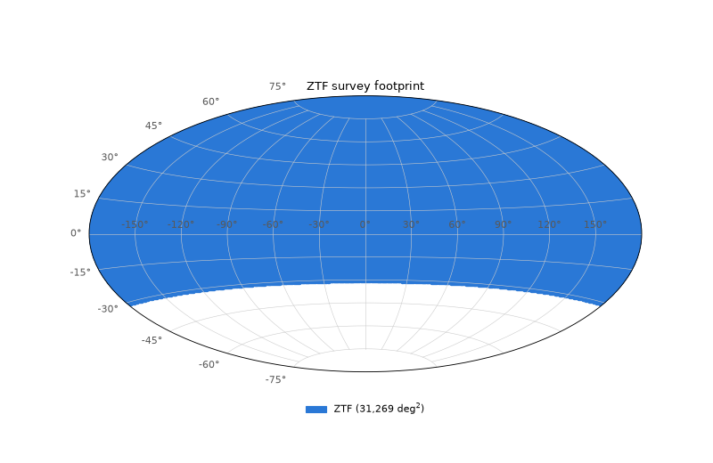
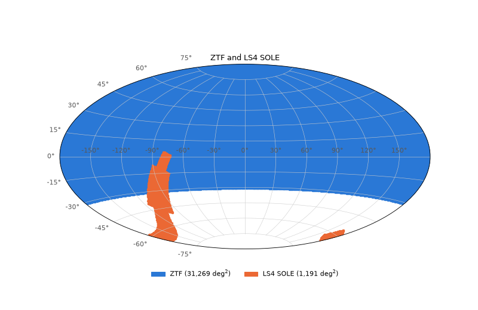
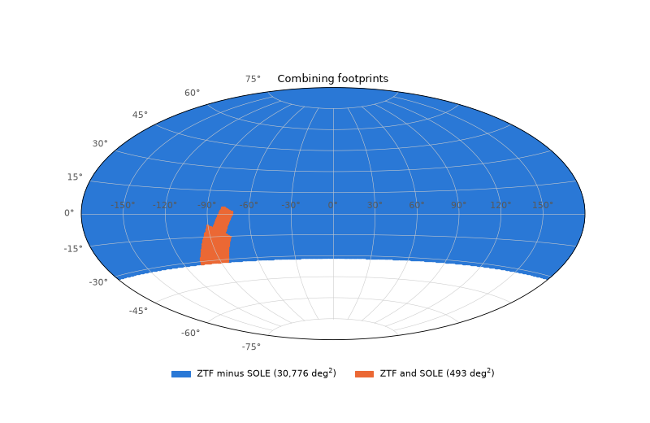
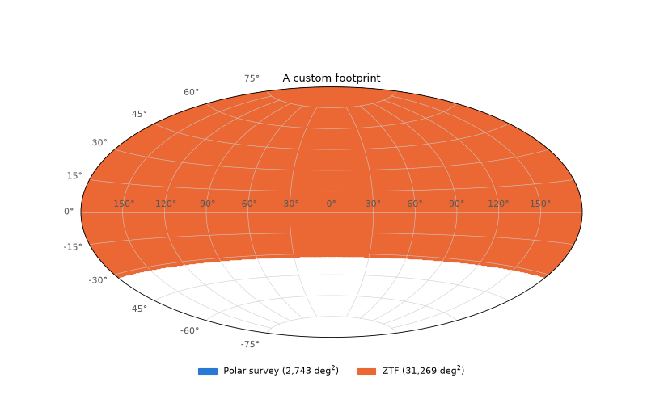
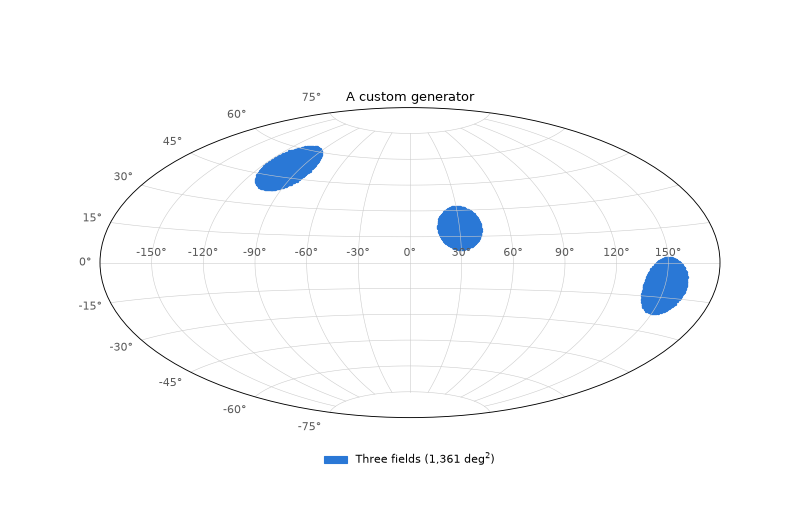

Survey Footprints#
A SurveySchedule answers the question “what did UVEX
actually observe, and when?” That is exactly what you need to decide whether one simulated
transient was seen. A different, coarser question comes up just as often: “where does a survey
look at all?” Which of the UVEX-detected TDEs also fall in the area Rubin LSST covers, and could
have optical follow-up or pre-discovery data? How much of ZTF’s sky overlaps the UVEX wide
survey? Those questions have nothing to do with a particular exposure or date. They concern the
footprint: the region of sky a survey is designed to cover.
uvex_transients.surveys.footprints represents footprints as named
SurveyFootprint objects. Each one wraps a
MOC (a Multi-Order Coverage map, a compact and exact-ish
description of a region of sky built from HEALPix cells), builds it lazily, caches it to disk,
and registers itself under a short name such as "uvex:lmlz:wide" or "lsst:wfd". Once a
footprint exists, testing a position against it, or an entire
EventCatalog of events, is a single
vectorized call.
This page covers what a footprint is and how the registered ones are organized, how to query them, how to combine them with set operations, how to define your own, and how the disk cache behaves.
Quick Look#
Every footprint the package defines is already in the
default_registry. Look one up by name, test
some positions against it, and draw it:
import matplotlib.pyplot as plt
from uvex_transients.surveys.footprints import default_registry
from uvex_transients.utils.plotting import plot_footprints
ztf = default_registry["ztf:main"]
# Is (RA, Dec) = (10, 45) deg in ZTF's footprint? What about (10, -60)?
print(ztf.contains([10, 10], [45, -60]))
plot_footprints({"ZTF": ztf}, title="ZTF survey footprint")
plt.show()
(Source code, png, hires.png, pdf)



The legend reports the footprint’s area, and the first contains call returns one boolean per
position. Everything else on this page elaborates on those two moves: get a footprint and
ask it questions.
What a Footprint Is#
A SurveyFootprint is a small dataclass with
four things that matter:
a
name, colon-separated and ordered observatory, survey, region (uvex:lmlz:wide),a
generator, a function that actually builds the MOC,a
paramsdictionary of keyword arguments for that generator, anda
persistflag saying whether the finished MOC should be cached to disk.
Nothing is computed when you construct one. The MOC is only built the first time something
touches moc, either by
running the generator or, for a persisted footprint, by reading the cache. That matters because
some generators are expensive: the UVEX footprints download a DS9 region file, and the LSST
footprints need a ~240 MB scheduler data archive. Importing the package costs none of that, and
you pay only for the footprints you use.
The MOC is stored at a maximum HEALPix order (MOC_max_order, default 10, about 3.4 arcmin
cells). A generator that produces something finer is degraded to that order, so footprints have a
predictable memory and disk size regardless of how they were made.
Note
A MOC is a cell-level description of the sky, so a footprint’s edge is only as sharp as its cell size. At the default order a position within a few arcminutes of a boundary can fall on either side of the true edge. For population-level questions like “what fraction of events lie in this survey?” that is negligible, but it is not the right tool for deciding whether one specific target sits right on a boundary.
The Registered Footprints#
The package ships footprints for four observatories. All register themselves when
uvex_transients.surveys.footprints is imported, and
names() lists them, optionally
filtered by prefix:
from uvex_transients.surveys.footprints import default_registry
print(default_registry.names()) # everything
print(default_registry.names("uvex:")) # just UVEX
Name |
What it covers |
|---|---|
|
The whole sky, an unrestricted baseline for the others to be intersected against. |
|
The low-Milky-Way/low-zodiacal-light wide survey. |
|
The LMLZ deep fields. These are point targets, expanded into circles the size of UVEX’s inscribed field of view. |
|
The Magellanic Clouds survey (LMC and SMC). |
|
ZTF’s visible sky, a declination cut from Palomar (declination above -31 degrees). |
|
The LS4 SOLE survey (Stellar Oscillations, Lensing, and Eruptions): a Galactic plane strip and a bulge box, about 1200 square degrees. |
|
Everything in Rubin’s sky-area map. The more specific regions below are its pieces. |
|
The wide-fast-deep area, north ecliptic spur, south celestial pole, Galactic plane and bulge, Magellanic Clouds, and Virgo cluster regions of the LSST survey. |
|
The LSST deep drilling fields, expanded from single pointings to the 1.75 degree radius field of view. |
|
The union of |
The names are just strings, looked up case-insensitively. A misspelled one raises a KeyError
that lists every registered name, so you rarely have to guess.
Where the Footprints Come From#
Each observatory’s footprint is built differently, depending on what the observatory publishes:
UVEX footprints come from the DS9 region files in the uvex-scheduler repository, the same project that produces the real schedules (see From the UVEX Scheduler). The first use of each downloads its file, converts the circles, polygons, and points to a MOC, and caches the result.
ZTF and LS4 publish no region file. ZTF’s coverage is the sky visible from Palomar, which a single declination cut describes well. LS4’s SOLE survey is defined in Bellm et al. (2025) as two boxes in Galactic coordinates, which the package turns into polygons. The other LS4 surveys have no numeric footprint in the paper and are deliberately left out rather than guessed.
LSST footprints are built from Rubin’s own scheduler: its labeled sky-area map supplies the
survey regions and its field list supplies the deep drilling fields. This is the one case that
needs an optional dependency, rubin_scheduler, installed with:
pip install "uvex-transients[rubin]"
You only need it to generate the MOCs. The scheduler data is downloaded once, and each finished
MOC is cached, so later runs need neither the package nor the download. The lsst:* names are
registered either way, and asking for the MOC of one without rubin_scheduler installed
(and nothing cached) raises an ImportError with the install command rather than failing
obscurely.
All of the URLs, region labels, radii, and box limits behind these footprints live in the
observatories section of config.yaml, so pointing at a new mirror or tweaking a region is
a config change rather than a code change.
Drawing Footprints#
plot_footprints() draws any mapping of labels to footprints
(or raw MOCs) on a full-sky Aitoff map, each in its own color with its area in the legend. Colors
are assigned in order, and later footprints are drawn over earlier ones. The LS4 SOLE survey and
ZTF make a nice pair, since SOLE hugs the Galactic plane and only partly overlaps ZTF’s sky:
sole = default_registry["ls4:sole"]
plot_footprints({"ZTF": ztf, "LS4 SOLE": sole}, title="ZTF and LS4 SOLE")
plt.show()
(Source code, png, hires.png, pdf)



The map samples each footprint on a HEALPix grid (nside=128 by default), so regions much
smaller than a pixel will not show. Pass a larger nside if you need to see them. See the
Survey Footprints for maps of every registered observatory.
Querying Footprints#
The central operation is asking whether sky positions lie inside a footprint.
contains() takes RA and Dec in
degrees (ICRS), which broadcast against each other:
ztf.contains(150.0, 20.0) # array([ True])
ztf.contains([10.0, 200.0], [45.0, -60.0]) # array([ True, False])
If you already have a SkyCoord, in any frame,
contains_skycoord() skips the
unit handling. Both are vectorized MOC lookups, so testing a million positions costs about as
much as it sounds like it should, which is very little:
import numpy as np
from astropy import units as u
from astropy.coordinates import SkyCoord
rng = np.random.default_rng(0)
n = 200_000
coords = SkyCoord(
rng.uniform(0, 360, n) * u.deg,
np.degrees(np.arcsin(rng.uniform(-1, 1, n))) * u.deg, # uniform on the sphere
)
in_ztf = ztf.contains_skycoord(coords)
print(f"{in_ztf.mean():.1%} of the sky lies in ZTF's footprint")
A uniform draw on the sphere makes the in-footprint fraction an area estimate, and here it should land near 76%, the fraction of the sky above a declination of -31 degrees.
Testing Against Several Footprints at Once#
When the same positions need checking against several surveys,
match() takes a list of names and
returns a dictionary of boolean masks:
masks = default_registry.match(coords.ra.deg, coords.dec.deg, ["ztf:main", "ls4:sole"])
masks["ls4:sole"].sum()
Anywhere a function accepts “a footprint or its name”,
resolve() is what turns the
string into the object, and passes an existing footprint straight through.
Footprints and Event Catalogs#
The most common use of a footprint is cross-matching a simulated population against it.
EventCatalog.in_footprint
returns one boolean per catalog row, aligned with the table, from a single vectorized lookup:
in_lsst = detected.in_footprint("lsst:combined")
n_total = len(detected)
n_overlap = int(in_lsst.sum())
print(f"{n_overlap / n_total:.0%} of detected events are in the LSST footprint")
# The mask indexes the catalog's table or any per-event array.
overlap_table = detected.table[in_lsst]
It accepts either a registered name or a footprint object. For a single event reconstructed with
get_events(),
Event.in_footprint does the same
for one position.
Note that a footprint mask is deliberately schedule-independent: it says where an event is, not whether UVEX (or anyone) observed it. Combining the two is the point. In the TDE and Rubin overlap example, TDEs are first detected using the UVEX schedule (see Simulation) and then masked against the LSST regions to count how many have Rubin coverage.
Combining Footprints#
Real questions are rarely about a single footprint. “Where do ZTF and LS4 SOLE overlap?” “What
part of LSST’s sky does UVEX’s wide survey not reach?” These are set operations, and
combine_footprints() builds a new, registered
footprint from any of them:
Operation |
Aliases |
Result |
|---|---|---|
|
|
Sky covered by any operand. |
|
|
Sky covered by every operand. |
|
|
The first operand with every later operand removed. |
|
|
Sky covered by exactly one of two operands. |
Operands can be footprint objects or their names, and the operation folds left to right, so
"difference" over three footprints is the first minus the second minus the third:
from uvex_transients.surveys.footprints import combine_footprints
overlap = combine_footprints(
"demo:ztf_and_sole",
"intersection",
["ztf:main", "ls4:sole"],
persist=False,
)
ztf_only = combine_footprints(
"demo:ztf_minus_sole",
"difference",
[ztf, sole],
persist=False,
)
plot_footprints(
{"ZTF minus SOLE": ztf_only, "ZTF and SOLE": overlap},
title="Combining footprints",
)
plt.show()
(Source code, png, hires.png, pdf)



The result is an ordinary SurveyFootprint: it is
lazy, queryable, plottable, and registered under the name you gave it, so it can be the operand
of a later combination or be passed by name to
in_footprint(). A combined footprint
also generates a description from its operation and operands unless you supply one.
Combined footprints are cached by default (persist=True), unlike a hand-built footprint,
because their operands are often cached, large MOCs and a set operation over them is not free. The
lsst:combined footprint is built exactly this way, as the union of lsst:main and
lsst:ddf. Because a combined footprint’s cache key includes its operands’ keys, changing an
operand invalidates the combination automatically. See Caching.
Tip
Operands finer than the result’s MOC_max_order are degraded before the operation, so you
can combine footprints of different resolutions. The combined footprint takes its own
MOC_max_order (pass it as a keyword argument).
Defining Your Own Footprint#
Anything you can express as a MOC can be a footprint. A generator is just a function that takes
a keyword-only max_order plus whatever else you put in params and returns a
~mocpy.MOC. The package ships several building blocks in
uvex_transients.surveys.footprints.utils:
Generator |
Builds |
|---|---|
The full sky. |
|
A declination band across every right ascension ( |
|
A box bounded by constant Galactic longitude and latitude. |
|
The union of several such boxes. |
|
A DS9 region file at a URL (circles, polygons, and points). |
For example, a hypothetical survey covering the northern cap above a declination of 60 degrees:
from uvex_transients.surveys.footprints import SurveyFootprint
from uvex_transients.surveys.footprints.utils import dec_band_MOC
polar = SurveyFootprint(
name="demo:polar:north",
generator=dec_band_MOC,
params={"min_dec": 60.0},
description="A made-up polar survey: everything above Dec = +60 deg.",
)
plot_footprints({"Polar survey": polar, "ZTF": ztf}, title="A custom footprint")
plt.show()
(Source code, png, hires.png, pdf)



Constructing the footprint registered it in the default registry, so default_registry["demo:polar:north"]
now works anywhere in the same session.
Using a Region File#
If your survey ships a DS9 region file, you do not need to write a generator at all. Point the URL helper at it and cache the result:
from uvex_transients.surveys.footprints.utils import fetch_and_generate_MOC_from_URL
my_survey = SurveyFootprint(
name="myobs:deep:fields",
generator=fetch_and_generate_MOC_from_URL,
params={"url": "https://example.org/fields.ds9", "point_region_size": 1.0},
persist=True,
)
Circles and polygons convert directly. A point region is a pointing rather than an area, so
point_region_size (a radius in degrees, normally your instrument’s field of view) is required
whenever the file contains any.
A Fully Custom Generator#
For anything else, write the function yourself. It must accept max_order as a keyword and
return a ~mocpy.MOC; a return of any other type raises a TypeError with the footprint’s
name in it. Here, a survey made of three fixed circular fields:
from functools import reduce
from mocpy import MOC
def circular_fields(*, max_order, centers, radius):
"""Union of circles (centers in (RA, Dec) degrees, radius in degrees)."""
mocs = [
MOC.from_cone(lon=ra * u.deg, lat=dec * u.deg, radius=radius * u.deg, max_depth=max_order)
for ra, dec in centers
]
return reduce(MOC.union, mocs)
fields = SurveyFootprint(
name="demo:fields:three",
generator=circular_fields,
params={"centers": [(30, 20), (150, -10), (260, 50)], "radius": 12.0},
description="Three 12 degree circular fields.",
)
print(f"{fields.moc.sky_fraction * 41253:,.0f} deg^2")
plot_footprints({"Three fields": fields}, title="A custom generator")
plt.show()
(Source code, png, hires.png, pdf)



Keep params JSON-friendly (numbers, strings, lists, and dictionaries of those). They are part
of the cache key, discussed next.
Registering and Naming#
Names are unique within a registry. Constructing a second footprint with a name that is already
taken raises a KeyError, so a typo cannot silently shadow a built-in. To replace one on
purpose, register explicitly:
polar.register(overwrite=True)
register() also accepts a
registry argument if you would rather keep a project’s footprints in their own
FootprintRegistry and out of the package-wide
default. Stick to the observatory:survey:region naming convention. The registry treats names as
opaque strings, but the cache uses each colon-separated part as a directory, and the convention
lets names() prefix filters
("uvex:", "lsst:") group things the way you would expect.
Caching#
Building a footprint can be slow (a download, a scheduler data archive, a polygon rasterized to
fine cells), and the answer rarely changes. A footprint created with persist=True is written
to the package cache directory the first time it is generated and reloaded from there on every
later run, in any session.
You can see where it lives and whether it is there:
fp = default_registry["uvex:lmlz:wide"]
fp.is_cached # whether a cached MOC matching the current key exists
fp.cache_key # e.g. "a6bbd64807df118d"
fp.cache_path # .../footprints/uvex/lmlz/wide/<cache_key>.fits
The Cache Key#
The cache file is named after a hash of everything that can change the footprint: its name, its
version, the dotted path of its generator, its params, and its MOC_max_order. Change
any of them and the key changes, so the old file is simply never looked up again. You never have
to remember to invalidate the cache after editing a footprint’s parameters.
The one thing the key cannot see is a change in the data behind a footprint when nothing
you control changed. For example, the UVEX region files track the main branch of
uvex-scheduler, so an upstream fix keeps the same URL and the same key. There are two ways to
refresh in that case:
fp.clear_from_cache() # delete the cached file and drop the in-memory copy
fp.moc # regenerates (and re-caches)
or bump version on the footprint (SurveyFootprint(..., version="v2")), which changes the
key. This is what the LSST footprints do: version in the observatories.lsst config
section is meant to be bumped after a rubin_scheduler upgrade changes the survey strategy.
Where the Cache Lives#
The footprint cache is a footprints/ folder inside the package-wide cache directory. That
directory is resolved from, in order, the UVEX_TRANSIENTS_CACHE environment variable, the
system.caching.cache_dir config entry, and finally your platform’s standard user cache
location. It is the same directory that holds other downloaded data, so on a shared machine or a
cluster it is worth pointing at fast, persistent storage:
export UVEX_TRANSIENTS_CACHE=/scratch/me/uvex_cache
Cache writes are atomic (a temporary file, then a rename), so a job killed mid-write never leaves a truncated file that the next run would trip over.
When not to Cache#
Persisting is off by default for a hand-built SurveyFootprint because analytic shapes such as
all_sky_MOC and dec_band_MOC are instantaneous to rebuild, and a cache file would only add
clutter. Turn it on for anything that downloads, parses a file, or rasterizes something large.
The built-in ztf:main and uvex:allsky footprints follow this rule, while the region file
and LSST footprints persist.
Putting It Together#
A typical footprint workflow strings these pieces together: simulate a population, keep the detected events, and ask where in the sky each survey could have seen them. The Survey Footprints has complete runnable versions, including the full TDE and Rubin overlap example, which
samples TDEs from the default UVEX schedule and keeps those detected above SNR 5,
masks them against
lsst:combinedwithin_footprint(),repeats the mask for each LSST region to see where the overlap lives, and
plots the detected events over the LSST footprint, colored by whether they fall inside it.
For method-by-method detail, see uvex_transients.surveys.footprints in the API
reference.